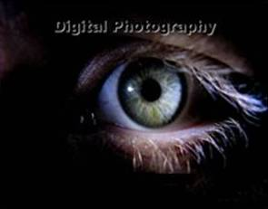
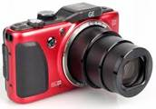
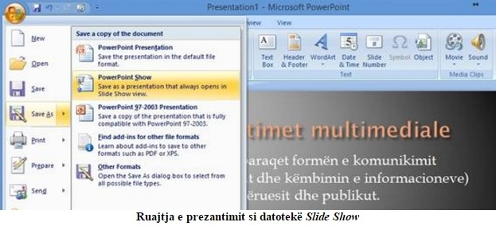

Parathënie
Të dashur nxënës! Para jush keni një material të përmbledhur nga lënda Grafika Kompjuterike dhe Multimedia,
i cili do të ju ndihmojë në nxënien e njohurive nga lëmi i multimedias. Megjithëse kjo lëndë realizohet në formë të ushtrimeve me kompjuter,
megjithatë përfitimi i njohurive edhe nga aspekti teorik, pastaj njohja me terminologjinë multimediale, që sigurisht është risi për ju,
është më se e domosdoshme për një fillim të mbarë në shkollë të mesme.
Materiali në këtë skriptë posedon përmbajtje që në përgjithësi përputhet me programin e lëndës. Edhe pse disponon një numër
të madh të dhënash, duhet të jetë e kapshme në nivelin e zotërimit të koncepteve themelore që i referohen llojit të caktuar të
përmbajtjes multimediale, çka duhet të jetë një bazë e mirë për avancimin e pavarur personal në këtë lëmi në përdorimin e programeve dhe
veglave softuerike.
Dua të theksoj, se qëllimi i mësimit të kësaj lënde është: njohja me elementet themelore të multimedias dhe aftësimi juaj për aplikim
të plotë dhe përmbajtjesor të kompjuterëve në shkollimin tuaj të mëtejmë si dhe punën e juaj në të ardhmen.
Shpresoj se përmbajtjet e parapara me lehtësi do t’i zotëroni, e detyrat e dhëna praktike dhe teorike do t’i kryeni me sukses!
Autori
HYRJE – NJOHJA ME LËNDËN
Me zhvillimin e hovshëm të teknikës dhe teknologjisë informative aplikimi i kompjuterëve ka gjetur zbatim në të gjitha lëmitë dhe veprimtaritë e
njerëzve. Andaj grafika kompjuterike dhe multimedia kërkon njohje nga nxënësit për arsimim më të suksesshëm dhe më bashkëkohor në të ardhmen.
Lënda Grafika Kompjuterike dhe Multimedia është lëndë profesionale dhe mësohet në vitin e parë në profilin arsimor Elektroteknik i kompjuterëve. Mësimi
zhvillohet në dy grupe në formë të ushtrimeve në kabinetet e kompjuterëve me nga dy orë bllok brenda javës për çdo grup. Realizimi i ushtrimeve
bëhet drejtpërdrejt në kompjuter, ku një kompjuter mund ta përdorin së bashku më së shumti dy nxënës.
Qëllimi i mësimit të lëndës Grafika Kompjuterike dhe Multimedia është që nxënësit të njoftohen në lidhje me elementet themelore të multimedias si dhe
aftësimi i tyre për të përdorur kompjuterët në arsimimin e tyre të mëtejshëm dhe në punën e tyre të ardhshme.
Detyrat e kësaj lënde mësimore janë:
- njohja me elementet themelore të multimedias;
- njohja me mjetet për përpunimin e tekstit;
- njohja me elementet themelore të përpunimit të fotografive;
- njohja me elementet themelore të përpunimit të zërit (audios);
- njohja me elementet themelore të përpunimit të videos;
- njohja me elementet themelore të programeve për krijimin e animacioneve;
- aftësimi për të përdorur një program për krijimin e prezantimeve.
Plan-programi vjetor i kësaj lënde ndahet në gjashtë tërësi kryesore dhe dy tërësi përcjellëse:
- HYRJE (2 orë) – njohja me lëndën dhe nocionin e grafikës dhe multimedias kompjuterike;
- PUNA ME TEKST (6 orë) - njohja me formatet e tekstit (txt, docx, html,...), veglat për përpunim të tekstit (Notepad, WordPad, MS Word,...), fontet, vendosja
e simboleve, etj.;
- PËRPUNIMI I IMAZHEVE NË KOMPJUTER (22 orë) – njohja me ngjyrat kompjuterike, burimet dhe formatet kryesore të imazheve (jpeg, png, bmp, ...), përpunimi
i fotografive (MS Paint, Photoscape, CorelDraw, AdobePhotoshop, ...), skaneri, fotoaparati digjital, etj.;
- PËRPUNIMI I ZËRIT (AUDIOS) (8 orë) – formatet e zërit në kompjuter (mp3, wma,...), konvertimet, përpunimi i zërit (me programin Audacity),etj.;
- PËRPUNIMI I VIDEOS (8 orë) – formatet e videos (wmv, avi, mp4, rm,...), përpunimi i video sekuencave (me Windows Movie Maker), vendosja e audios në
sekuencën e videos, etj.;
- ANIMACIONET (6 orë) – nocioni dhe llojet e animacioneve kompjuterike, animacioni në Web, krijimi i animacioneve të thjeshta (GIF animacione), etj.;
- PREZANTIMET MULTIMEDIALE (16 orë) – nocioni dhe elementet themelore të prezantimit, njohja me MS Power Point, pjesa tekstuale e prezantimit, vendosja
e grafikës, audios dhe videos në prezantim, paraqitja e prezantimit, etj.;
- KRIJIMI I PROJEKTIT (6 orë) – temat për realizimin e projekteve janë të lira apo pjesë e materialit të ndonjë lënde që mësohet gjatë vitit.
1. NOCIONI I GRAFIKËS KOMPJUTERIKE DHE MULTIMEDIAS
Zhvillimi i hovshëm i teknikës kompjuterike në dekadat e fundit të shekullit XX, e posaçërisht zhvillimi dhe përhapja e Internetit, krijuan
parakushte të shkëlqyeshme për këmbim të fotografive, videove, muzikës dhe përmbajtjeve tjera në formën digjitale. Komunikimi në
mes njerëzve është bërë më shumë vizual, e të gjitha mediet ekzistuese janë bashkuar në një medium të unifikuar universal. Andaj është
futur në aplikim emërtimi multimedia digjitale, si kombinim i dy apo i më tepër media në formën digjitale – tekst, audio, imazh, video dhe animacion.
Sistemin multimedial e përbëjnë të gjitha komponentët që marrin pjesë në prodhimin e përmbajtjeve digjitale e multimediale, distribuimin e tyre (bartjen
deri tek shfrytëzuesi), si dhe paraqitjen e tyre. Distribuimi i përmbajtjeve bëhet “online” (përmes rrjeteve kompjuterike), “offline” (përmes pajisjeve
memoruese – CD, DVD, fllesh memorie,...) apo kombinimin e këtyre dy metodave.
1.1. Aplikimi i multimedias
Multimedia sot gjenë aplikim në të gjitha sferat e jetës sonë – në biznes, arsim, mjekësi, administratë, tregti, komunikacion si dhe në aktivitetet e përditshme
shtëpiake... posaçërisht është e rëndësishme prezenca e multimedias në Web. Në këtë mënyrë përmbajtjet multimediale janë të disponueshme për të gjithë.
2. FORMATET E TEKSTIT
Mënyra me të cilën përmbajtja e tekstit shndërrohet në numra binarë paraqet formatin e tekstit.
Datotekat tekstuale në fund të emërtimeve të tyre përmbajnë ekstensionin.
Formatet tekstuale më shpesh të përdorura janë:
- teksti i “pastër” – Plain text (me ekstensionin .txt),
- teksti i “pasuruar” – Rich text format (.rtf),
- Microsoft Word (.doc dhe .docx).
Përveç këtyre formateve shpeshherë përdoren edhe:
- PDF – Portable Document Format (.pdf)
- HTML – HyperText Markup Language (.html)
2.1. Veglat për përpunimin e tekstit
Programet softuerike dhe mjetet për përpunimin e tekstit quhen editorë të tekstit apo tekst editorë, por takojmë edhe emërtimin procesorët e tekstit.
Tekst editorët zakonisht përdoren për përpunim të thjeshtë të sasisë së vogël të tekstit (Notepad), deri sa tekst procesorët përdoren për aplikim
dhe përpunim më të ndërlikuar të teksteve (Microsoft Word).
Sot, përveç këtyre programeve ekzistojnë edhe tekst editorë të tjerë:
- WordPad
- Ultra Edit
- Super Edit, etj.
2.1.1. Art editori
Në kuadër të tekst procesorëve ekzistojnë edhe editor të posaçëm me veglat për vendosjen e efekteve artistike në tekst – Art Editor, i cili jep
mundësinë që kreativiteti i shfrytëzuesit të shfrytëzohet maksimalisht. P. sh në programin Microsoft Word e kemi Word-Art-in.
2.1.2. Fontet
Pamjen e tekstit e përcaktojnë karakteristikat e tij vizuale – forma dhe madhësia e karaktereve si dhe mënyra e rregullimit të faqes.
Një grup i karaktereve quhet repertor i karaktereve.
Forma fizike e simbolit me madhësi dhe formë të caktuar quhet glif ose formë e shkronjës. Glifët organizohen në bashkësi të
cilat quhen fonte.
Disa lloje të fonteve që më shpesh përdoren janë:
- Times New Roman,
- Arial,
- Calibri,
- Verdana,
- Comic Sans MS,
- Helvetica.
Në brendi të çdo fonti ekziston mundësia e zgjedhjes së stileve dhe madhësive të ndryshme.
Madhësia e fontit matet me point (pt), ku 1 pt = 1/72 inç (0,3528 mm).
3. FOTOGRAFITË DIGJITALE

Në kompjuter dhe në pajisjet tjera digjitale, fotografia ka strukturë të saktë të regjistrimit dhe paraqitet me matricën e pikave – piksellëve.
Piksellët janë elemente më të vegjël të fotografisë, emërtimi i të cilave rrjedh nga shprehja “Picture Elements”.
Parametrat kryesor të paraqitjes së fotografisë janë rezolucioni dhe brezi dinamik.
Rezolucioni është masa precize e paraqitjes së fotografisë, ajo mund të definohet në dy mënyra, si rezolucion relativ dhe absolut.
Rezolucioni relativ paraqet numrin e piksellëve në njësi të gjatësisë (zakonisht si njësi e gjatësisë merret inç-i) (1 inç = 2.54 cm), ndërsa
rezolucioni absolut paraqet numrin e tërësishëm të piksellëve të fotografisë që shqyrtohet.
Rezolucioni shprehet në njësinë e cila quhet numri i piksellëve për inç (ppi – pixels per inch) ose me numër të pikave për
inç (dpi – doth per inch).
Rezolucioni i zakonshëm i fotografive për paraqitje në ekran është prej 72 deri në 150 ppi, ndërsa për printim përdoret rezolucioni në
diapazonin prej 100 deri në 600 dpi.
Brezi dinamik përcakton precizitetin e paraqitjes së piksellëve individuale. Shprehet me numër të ndryshëm të nuancave të ngjyrës me të cilën paraqitet një piksell.
Regjistri i fotografisë digjitale kryesisht përbëhet prej:
- Kokës – të dhënat që përshkruajnë gjerësinë, lartësinë, brezin dinamik dhe detajet e regjistrimit të fotografisë dhe
- Përmbajtja e fotografisë.
Aplikohen dy forma të paraqitjes së fotografisë (imazheve) digjitale:
- Grafika vektoriale dhe
- Grafika rasterike (e bitmapuar).
3.1. Grafika vektoriale
Vektori (vija vektoriale) si nocion në grafikë, paraqet segmentin i cili ka gjatësinë dhe drejtimin.
Grafika vektoriale paraqet mënyrën e “vizatimit” me ndihmën e këtyre vijave vektoriale. Çdo vijë përmban tri të
dhëna – gjatësinë, drejtimin, dhe të dhënat për ngjyrën. Vektorët përdoren për krijimin e objekteve vektoriale
(figura dhe forma të ndryshme gjeometrike), për të cilën definohen të dhënat themelore të objektit:
- Gjatësia e vijës,
- Drejtimi,
- Ngjyra e vijës dhe
- Mbushja e objektit
Me objekt vektorial nënkuptojmë bashkimin e një apo më shumë vijave të cilat janë të mbyllura. Pika fillestare e
vijës gjithashtu paraqet edhe pikën përfundimtare të saj, andaj në grafikën vektoriale, në bazë të formulave të thjeshta
matematikore, kompjuteri i ruan më së shumti katër të dhëna për çdo objekt. Për këtë arsye imazhet dhe vizatimet
zënë hapësirë të vogël në memorie.
Madhësia e vektorit ndryshon me ndërrimin e vlerës matematikore të gjatësisë dhe drejtimit, çka nuk ndikon në kualitetin
e paraqitjes së grafikës.
3.2. Grafika rasterike
Grafika rasterike paraqet “vizatimin” me ndihmën e matricës së pikave – piksellëve, gjatë së cilës çdo piksell në
mënyrë të pavarur bartë informacionin për ngjyrën që e reprodukon.
Madhësia e fotografisë e fituar në këtë mënyrë dhe kualiteti i saj varen nga numri i piksellëve që e përbëjnë.
Zmadhimi i fotografisë rasterike arrihet me rritjen e piksellëve ekzistues apo shtimin e piksellëve të ri, ndërsa
zvogëlimi i fotografisë arrihet me zvogëlimin e piksellëve apo me heqjen e tyre. Në këtë mënyrë fitohet fotografi fizikisht
më e madhe apo më e vogël, por me një rënie të shprehur të kualitetit.
Fotografitë e krijuara në grafikën rasterike zënë hapësirë më të madhe memoruese se imazhet e krijuar në grafikën vektoriale.
3.3. Ngjyrat
Drita përbëhet prej shumë komponentëve, prej të cilave çdo njëra ka frekuencë të caktuar.
Bashkësia e të gjitha komponentëve të dritës na jep spektrin e dritës.
Diapazoni i dritës së dukshme gjendet në brezin e gjatësive valore prej 380 nm deri në 740 nm (nanometra), por konsiderohet
se syri i njeriut e sheh dritën me gjatësi valore prej 400 nm deri në 600 nm.
Syri i njeriut është në gjendje t’i dallojë rreth 350000 ngjyra. Diçka më i ndjeshëm është në nuancat e ngjyrës së gjelbër.
Ekzistojnë dy modele themelore për paraqitje të ngjyrave, e ato janë:
- Modeli aditiv,
- Modeli subtraktiv.
Modeli aditiv – krijohet me mbledhjen (aditivin) e ngjyrave. Ky është i ashtuquajturi modeli RGB (R – Red-e
kuqe, G – Green-e gjelbërt dhe B – Blue-e kaltër).
Modeli subtraktiv – përfitohet me zbritjen e ngjyrave. Ky është i ashtuquajturi modeli CMYK (C – Cyan-kaltër e çilët,
M – Magenta-vjollce, Y – Yellow-e verdhë dhe K – Black-e zezë).
Gjithashtu ekziston edhe modeli tjetër për paraqitje të ngjyrave në kompjuter, si: modeli subtraktiv HSB
(Hue – ngjyrimi, Saturation – ngopje, Brightness – ndriçimi), i cili mund të takohet edhe me simbolet HSV dhe HSL.
3.3.1. Ngjyrat kompjuterike
Tek modeli RGB për paraqitjen e ngjyrave përdoret regjistrimi binar prej 24-bitësh (8 bitë për çdo ngjyrë themelore). Kjo nënkupton
se çdo ngjyrë mund të ketë 28=256 nuanca të ndryshme (mund të paraqiten me numra prej 0 deri në 255), ndërsa numri i
kombinimeve është 224=16777216.
Për paraqitje të ngjyrave në Web përdoren 16 simbole – numra dhe shkronja (sistemi heksadecimal): 0, 1, 2, 3, 4, 5, 6, 7, 8, 9, A, B, C, D, E dhe F.
Paleta e ngjyrave paraqet modelin matematikor që definon numrin e piksellëve të paraqitur në ekran.
Thellësia e ngjyrës paraqet numrin e bitëve me të cilën shprehet çdo piksell.
3.4. Burimet e imazheve
Për krijimin e përmbajtjeve multimediale mund të përdoren imazhet të marra nga burime të ndryshme.
Këto imazhe mund të jenë vizatime të krijuara me ndonjë program kompjuterik për vizatim, fotografitë e krijuara me fotoaparat digjital, imazhe
të marra nga faqet e shumta në Internet, imazhe të skanuara apo imazhe të fotografuara nga ekrani i kompjuterit.
Për krijimin e vizatimeve digjitale përdoren programe për krijimin e imazheve në grafikën rasterike dhe vektoriale. Ekzistojnë shumë
programe për vizatim nga më të thjeshtit siç është MS Paint, e deri tek programet për vizatim teknik profesional siç është AutoCAD.
Përdorimi i fotoaparatëve digjital është bërë shumë i zakonshëm në rrethin shumë të gjerë të shfrytëzuesve duke ju falënderuar përdorimit
të thjeshtë, mundësisë së pamjes së fotografisë menjëherë pas fotografimit, bartjen e thjesht të fotografisë në kompjuter si dhe korrigjimin dhe përpunimin e tyre.

Duke ju falënderuar mundësisë së vendosjes së fotografive digjitale dhe vizatimeve në ueb faqe, në ato imazhe mund të ketë qasje një numër i
madh i shfrytëzuesve të Internetit.
Shpesh nevojitet të përdoren imazhet të cilat nuk janë të paraqitura në formën elektronike, por vetëm në formën e shtypur. Për t’i përdorur këto
imazhe do të duhet t’i skanojmë me anë të skanerit.
Gjatë përdorimit të kompjuterit shpesh nevojitet të përdoret imazhi që në momentin e caktuar paraqitet në ekranin e monitorit. Fotografimi i
ekranit (Screen Shot) apo printimi i imazhit që paraqet pamjen momentale të ekranit (Print Screen) mund të bëhet në mënyrë të drejtpërdrejt
nga tastiera duke klikuar në tastin PrtScrn.
3.5. Formatet themelore të imazheve
Formatet për ruajtjen (memorimin) e grafikës vektoriale varen nga programet në të cilët përmbajtja e datotekës është krijuar. Nëse janë
në pyetje vizatimet e thjeshta kryesisht ekziston kompatibilitet ndërmjet programeve të ndryshme, prandaj datotekat e programeve të ndryshme
lehtë njihen. Mirëpo, në rastin e imazheve të ndërlikuara kompatibiliteti është i rrallë, gati çdo program e ka formatin e tij specifik.
Për grafikën rasterike më së shpeshti përdoren këto formate:
BMP (Windows Bitmap) – është format standard për imazhe rasterike në të gjithë kompjuterët personal (tek sistemet operative Windows).
TIFF (Tagged Image File Format) – është format shumë i pranuar si në platformat kompjuterike të Windows-it ashtu edhe në MAC (Macintosh).
Karakteristikë e përbashkët e të dy formateve është kualiteti i lartë i imazhit si dhe hapësira e madhe memoruese që e zënë.
Do t’i cekim disa prej formateve të kompresuara për paraqitjen e imazheve rasterike:
JPG (JPEG) (Joint Photographic Experts Group) – është format i cili imazhin e zvogëlon me metodën e kompresimit deri në 25 herë, gjatë së cilës imazhi e
humb kualitetin paraprak, por edhe madhësinë e datotekës për ruajtje. Ky format përkrah paraqitjen e të gjitha thellësive të ngjyrave, andaj është i përshtatshëm
për imazhe me strukturë të ndërlikuar dhe për fotografi të digjitalizuar.
GIF (Graphic Interchange Format) – është format i imazheve me vetëm 256 ngjyra, i dedikuar për grafikë në Internet; nuk është i paraparë për fotografi me shumë
ngjyra, por për vizatime dhe skica.
PNG (Portable Network Graphics) – është format i ngjashëm me GIF-in, 8 bitësh me 256 ngjyra. Përparësi ka se siguron “thellësi” më të madhe të ngjyrave.
3.6. Përpunimi themelor i fotografive
Qëllimi i përpunimit është përshtatja e fotografisë për aplikimin e saj, e kryesisht bëhet për dy arsye:
- Për t’i larguar të gjitha të metat e shkaktuara gjatë krijimit të fotografisë dhe
- Për të krijuar efekte speciale të cilat natyrisht nuk mund të realizohen.
Përpunimi i fotografisë bëhet me ndihmën e programeve të cilët quhen me një emër editorët e fotografive.
Përpunimi i fotografisë përfshinë ndryshimin e dimensioneve (rezolucionin), transformimin gjeometrik (translacionin, rotacionin,...), rregullimin e ndriçimit, përdorimin e filtrave për
vendosjen e efekteve speciale, fotomontazhin, etj.
Tek fotografitë e bitmapuara përpunimi bëhet kryesisht ndaj ndonjë grupi të piksellëve.
Procedura e përpunimit nënkupton së pari përcaktimin e një pjese të fotografisë që dëshirojmë ta modifikojmë. Kjo procedurë quhet selektim dhe kryhet me veglat për selektim.
Datoteka me fotografinë e krijuar kryesisht përbëhet prej disa shtresave (layers), shtresa e parë zakonisht është sfondi (background) ndërsa të gjitha shtresat tjera janë të
tejdukshme (transparente) ashtu që sfondi mund të duket nëpërmes tyre. Me bashkimin e të gjitha shtresave fitohet fotografia e plotë.
Programet për editim të fotografive mund të kenë edhe mundësinë e krijimit të objekteve tredimensionale (3D) të paraqitur me imazhe dydimensionale (2D).
3.6.1. Adobe Photoshop
Një prej programeve më të popullarizuar për përpunim (amator dhe profesional) të fotografive është Adobe Photoshop. Në pjesën e epërme të interfejsit të këtij programi gjendet menyja e
zakonshme që gjendet ngjashëm si te programet tjera, në anën e majtë gjendet kutia me vegla (Toolbox), ndërsa në anën e djathtë gjendet paleta e dritareve ndihmëse.
Kutia me vegla përmban këto vegla: veglat për selektim, veglat për ngjyrosje dhe editim, kornizat për zgjedhjen e ngjyrave dhe veglat për shfletim.
Duhet cekur se shumica e veglave kanë opsione shtesë, ku është treguar vetëm një prej tyre, ndërsa tjerat janë të fshehura. Ato mund të aktivizohen duke klikuar në trekëndëshin e vogël
në këndin e djathtë të poshtëm të veglës përkatëse.
3.7. Biblioteka e imazheve të gatshme
Nga pamundësia që të kemi gjithmonë fotografi që na duhen kur krijojmë ndonjë punim multimedial, publikim, Web faqe, etj., mund të marrim fotografi të tilla në Internet.
Ekzistojnë shumë Web faqe të cilat na mundësojnë shkarkimin e fotografive, por më së shpeshti ofrohen dhe merren nga fotografitë falas në Internet. Gjatë kësaj duhet pasur parasysh
që autori i fotografisë të jetë i pajtimit me shfrytëzimin e lirë të tyre. Kësi lloj sajtesh në Internet ka mjaft.
Një prej koleksioneve të fotografive falas më të popullarizuar është Clip Art-i, e cila është e integruar në paketën programore të Microsoft Office-it. Për tu qasur në Web faqen e Clip Art-it
shtypim në shiritin e adresave të shfletuesit të Internetit www.clipart.com ku mund të gjejmë shumë kategori të fotografive – vizatimeve, ilustrimeve, web-grafikës,
fonteve e deri te përmbajtjet audio.
3.7.1. Njohuri për Clip Art-in
Clip Art në artet grafike i referohet krijimit të imazheve për të ilustruar çdo medium. Sot Clip Art përdoret gjerësisht në projekte personale dhe komerciale, duke filluar nga punimet shtëpiake si
kartolinat e shtypura e deri tek botimet elektronike komerciale.
Clip Art-i vjen në shumë forma, në atë elektronike dhe të shtypura, megjithatë ai sot krijohet, shpërndahet dhe përdoret në formë elektronike.
Që nga fillimi i tij Clip Art-i ka evoluar për të përfshirë një varitet të gjerë të përmbajtjes, formateve, stileve të ilustrimit dhe kufizimeve të licencimit. Clip art-i në përgjithësi është i përbërë
vetëm nga ilustrimet (krijuar me dorë ose nga softuerët kompjuterik), dhe nuk përfshin fotografi fotorealiste.
3.8. Përgatitja e fotografive për paraqitje në ekran, për printim dhe për shpallje në Internet
Para se të paraqiten në ekran, të printohen apo të shpallen në ndonjë faqe të Internetit, fotografitë paraprakisht duhen të përgatiten, të ju ndryshohet rezolucioni, dimensionet apo të
konvertohen në ndonjë format më të përshtatshëm.
3.8.1. Paraqitja e imazheve në ekran
Gjatë paraqitjes përdoret modeli i ngjyrave RGB. Madhësia fizike e imazhit varet nga rezolucioni i ekranit në të cilin paraqiten. Dimensionet natyrale të imazhit e përcaktojnë rezolucionin origjinal
të tij, që shprehet me numër të piksellëve për inç (ppi). Nga ana tjetër, rezolucioni i ekranit paraqet madhësinë e imazhit të cilën monitori mund ta paraqes. Standardi në përgjithësi i pranuar është 72 ppi.
Dimensioni fizik i imazhit të paraqitur në ekran llogaritet me këtë relacion:
Madhësia fizike (inç) = dimensioni i imazhit (piksell) / rezolucioni i ekranit (piksell/inç)
3.8.2. Përgatitja e imazheve për printim
Për tu mundësuar fotografia në teknologjinë e printimit ajo duhet të ketë rezolucion të caktuar. Për printim cilësor me ngjyra (revista, publikime, postere,..) zakonisht kërkohet rezolucion më të
vogël prej 300 ppi. Ndërsa për fotografi bardh e zi, apo printim më modest nevojitet rezolucion prej 180 ppi. Prandaj, përgatitja e imazheve nënkupton përpunimin e tyre dhe rregullimin e rezolucionit
përgjegjës.
Imazhet për printim përgatiten në modelin e ngjyrave CMYK, pra, duhen të rregullohen ngjyrat sepse në ekran paraqiten në modelin RGB.
3.8.3. Përgatitja e imazheve për Web
Për një web-faqe më atraktive dhe për të mbajtur vëmendjen e vizitorit web-faqet ndërtohen ashtu që në vete përmbajnë një numër të konsiderueshëm të imazheve, por ato përbëjnë 30 deri në
50 përqind të madhësisë së web-faqes. Andaj në kodin HTML nevojitet definimi i dimensioneve të imazhit. Rezolucioni nuk duhet të jetë më i madh se 72 ppi.
Përgatitja e imazheve për Web bëhet me prerjen dhe ndryshimin e madhësisë së imazheve si dhe me zvogëlimin e numrit të ngjyrave në imazh. Ekzistojnë shumë programe që e mundësojnë
këtë, si: Adobe Photoshop, IrfanView, XnView, etj.
Web-faqet i përkrahin këto formate të imazheve: JPEG, GIF dhe PNG.
3.9. Skanimi
Skanimi paraqet procedurën me të cilën imazhet në letër apo në ndonjë bazë tjetër shndërrohet në formën digjitale të përshtatshme për përpunim, ruajtje dhe bartje në mediumet bartëse.
Pajisjet që përdoren për skanim quhen skaner. Shpesh përdoren në dizajn dhe në botimet digjitale (printime). Gjithashtu skanerët përdoren si pjesë përbërëse të pajisjeve tjera, si p.sh. dërgimi
i faksit bëhet me skanimin e përmbajtjes të shënuar në letër, ndërsa me kombinimin e skanerit dhe printerit fitojmë pajisjen për fotokopje.
Ekzistojnë tipa dhe madhësi të ndryshme të skanerëve (të dorës, tavolinës, rrotullues,...), ndërsa prodhues të njohur të tyre janë HP, Canon, Epson, etj.
Parimi i punës së skanerit bazohet në lëvizjen e kokës së skanerit nëpër sipërfaqen e shqyrtuar (të tejdukkshme apo jo të tejdukshme), ndriçimin e sipërfaqes së skanuar dhe pranimin e
dritës së reflektuar apo të lëshuar me element të ndjeshëm optik. Në këtë mënyrë për çdo piksell ruhet informacioni i intensitetit të ndriçimit dhe formohet fotografia digjitale e sipërfaqes përkatëse.
Kualiteti i fotografisë së skanuar varet nga rezolucioni i skanerit që shprehet me numër të pikave për inç (dpi). Rezolucioni i skanerëve të rrafshët sillet rreth 1200 dpi, ndërsa te skanerët
rrotullues prej 2400 e deri në 9600 dpi, e më shumë.
Përveç skanerit, për skanim nevojiten edhe programe speciale që dorëzohen së bashku me skanerët, ndërsa shumica e editorëve të fotografive gjithashtu ofrojnë mundësinë e skanimit.
P. sh. për skanim të fotografisë në Photoshop në menynë File duhet zgjedhur Import dhe WIA Support (përkrahja për Windows). Më pas duhet zgjedhur
lokacionin se ku do të ruhet fotografia e skanuar duke markuar opsionet Open Acquired dhe Unique Subfolder. Pas kësaj ofrohen mundësitë e zgjedhjes së llojit të fotografisë, katër opsione:
Color Picture (imazh me ngjyra), Grayscale Picture (imazh me nuanca të ngjyrës së përhimë), Black And White Pictureor Text (imazh bardh e zi ose tekst) dhe Adjust The Quality
Of The Scanned Picture (rregullimi i kualitetit të imazhit që skanohet). Pas zgjedhjes së njërit opsion mund të shihet se si do të duket imazhi i skanuar (Preview). Nëse është gjithçka në rregull
duhet klikuar në Scan dhe imazhi do të ruhet në lokacionin e zgjedhur në formatin BMP.
3.10. Fotoaparati digjital
Një ndër pajisjet bashkëkohore më të popullarizuara menjëherë pas telefonave celular (ku shumica prej tyre përmbajnë fotoaparat digjital) sigurisht që është fotoaparati digjital.

Popullariteti i fotoaparatit digjital inkurajohet nga përdorimi i thjeshtë i tyre (munden në mënyrë shumë të suksesshme ta përdorin edhe amatorët), dimensionet e vogla, mundësia e thjeshtë e lidhjes
me kompjuter dhe bartja e fotografive në hard-diskun e tij si dhe këmbimi i fotografive përmes Internetit apo mediumeve tjera bartëse. Gjithashtu mundësojnë edhe xhirimin e video-inserteve të shkurta.
Parimi i punës së fotoaparatit digjital bazohet në shndërrimin e dritës nga skena që xhirohet në sinjal elektrik (me ndihmën e sistemit optik dhe elementeve foto të ndjeshme – senzorëve). Ata
shndërrojnë dritën në tension elektrik proporcional me intensitetin e dritës. Ky sinjal elektrik ka formë analoge, andaj duhet të shndërrohet në formë digjitale me ndihmën e konvertorit analog-digjital
(A/D). Sinjali në formën digjitale shkon në procesorin e sinjaleve digjitale (DSP), i cili e përpunon dhe ja jep formën përfundimtare si fotografi digjitale.
Pjesët kryesore të fotoaparatit digjital janë:
- Trupi i fotoaparatit,
- Objektivi,
- Kërkuesi i optik ose elektronik i imazhit (ekrani LCD),
- Senzori,
- Konvertori A/D,
- Elementi memorues,
- Procesori,
- Komandat për trajtim me aparatin,
- Blici,
- Konektori për lidhje me kompjuter dhe
- Burimi për furnizim.
Karakteristikat themelore të cilat përcaktojnë kualitetin e fotoaparateve digjital janë:
- Rezolucioni – harduerik dhe softuerik,
- Kualiteti i optikës (objektivit),
- Madhësia e ekranit LCD,
- Madhësia e zmadhimit (zoom) dhe
- Sasia e memories së integruar (dhe çipit shtesë memorues).
Prodhuesit më të njohur të fotoaparateve digjital janë: Kodac, Canon, Nikon, Fuji, Olimpus, Sony, etj.
4. AUDIO (ZËRI)
Zëri është një ndër komponentët më të rëndësishme në multimedia. Dy lloje kryesore të përmbajtjeve të zërit në multimedia janë:
Zëri paraqet ndryshimin e presionit të ajrit në kohë. Ndryshimi i presionit shkakton oscilime mekanike të grimcave të ajrit përreth. Këto oscilime barten me
shpejtësi prej 340 m/s (metra për sekondë) dhe arrin deri tek shqisa e të dëgjuarit të njeriut.
Zërin e karakterizojnë tri madhësi themelore:
Amplituda – paraqet vlerën maksimale të presionit të valës së zërit e cila përcakton intensitetin e zërit të shprehur në decibel (dB).
Frekuenca – paraqet numrin e oscilimeve të sinjalit të zërit në një sekondë dhe shprehet me herc (Hz).
Faza – definon këndin fazor të sinjalit në raport me vlerën referente (fillimi i sistemit koordinativ në diagram). Faza shprehet me radian (rad) apo me shkallë (° ).
Njeriu mund të dëgjoj zëra, frekuenca e të cilëve sillet prej 20 Hz deri në 20000 Hz (20 kHz). Sinjalet me frekuencë mbi 10 kHz shumica e njerëzve shumë dobët i dëgjojnë.
Sipas intensitetit njeriu mund të regjistroj sinjalet prej afërsisht 0 dB (“pragu i zhurmës”) deri në 120 dB (“pragu i dhembjes”).
4.1. Digjitalizimi i audios
Zërin që e dëgjojmë përreth nesh ka natyrë kontinuale (analoge), andaj për ta ruajtur në kompjuter ai nevojitet të digjitalizohet. Sipas teoremës së Nyquist-it gjatë digjitalizimit mjafton që vlera e
sinjalit të zërit të mostrohet dy herë më shpejtë se sa vlera maksimale e frekuencës së sinjalit.
Pajisja me të cilën sinjali analog shndërrohet në sinjal digjital quhet shndërruesi analog-digjital (konvertori A/D).
Standardi i pranuar për Audio CD bazohet në frekuencën e mostrimit prej 44,1 kHz. Shumica e lojërave kompjuterike mostrohen në frekuencat e mostrimit prej 11 apo 22 kHz.
Edhe pse më parë për digjitalizim janë përdorur 8 bitë (1 bajtë), sot në mënyrë të standardizuar për regjistrimin e çdo mostre përdoren 16 bitë (2 bajtë). Kjo mundëson regjistrimin
e 65536 niveleve të ndryshme të intensitetit të zërit, çka jep brez dinamik prej 96 dB që konsiderohet mjaft i kënaqshëm.
Për të shfrytëzuar më mirë radhitjen e hapësirave të sinjalit të zërit përdoret teknika stereo. Për digjitalizim të zërit në teknikën stereo nevojiten së paku dy mikrofona (2 kanale).
Nocioni që tregon se sa kilobitë për sekondë nevojitet për “vendosjen” e zërit quhet bit-shpejtësia (“bit-rate”) dhe shprehet në njësinë “kilobitë për sekondë” (kbps – kilobits per second). Vlera
nominale është 128 kbps.
Nëse thjeshtë shënojmë një varg të numrave të fituar me digjitalizimin e zërit atëherë përfitojmë të ashtuquajturin modulim PCM (Pulse Code Modulation).
Për reproduktimin e zërit, ai përsëri rikonstruktohet nga forma digjitale dhe përsëri shndërrohet në formën analoge me ndihmën e pajisjes së quajtur shndërrues digjital-analog (konvertori D/A).
Regjistrimin dhe reproduktimin e zërit në kompjuter e mundëson kartela e zërit.
Për regjistrimin e një minute të zërit në teknikën stereo nevojitet kjo hapësirë memoruese:
2 ∙ 44100 Hz ∙ 2 B ∙ 60 s = 10584000 B = 10,58 MB.
4.2. Formatet e audios
Ekzistojnë dy standarde themelore për formimin e përmbajtjes së audios digjitale:
- MIDI (Musical Instrument Digital Interface)
- DA (Digital Audio)
MIDI është standard për instrumente muzikore dhe kompjuterë elektronik i zhvilluar në vitet e 80-ta të shekullit XX. Ai jep një përshkrim të detajuar të notave muzikore dhe
definon 127 instrumente muzikore të ndryshme. Përparësitë e këtij standardi janë se zënë hapësirë të vogël memoruese, lehtë dhe shpejtë reproduktohet, ndërsa
gjatësia e datotekës MIDI mund të ndryshohet pa humbje në kualitet. Mangësia e tij është se nuk mund të përdoret për reprodukim të të folurit.
Audio Digjitale (DA) është standard që jep reprezentim real të zërit në formën digjitale, por zënë hapësirë më të madhe memoruese.
Sot, aplikim më të madh ka standardi DA, derisa standardin MIDI e përdorin kryesisht profesionistët muzikor.
Ekzistojnë shumë formate të Audios Digjitale, por më shpesh përdoren MP3, WAV, WMA, etj.
WAV (Waveform Audio) – është format që së bashku e kanë zhvilluar dy kompani të njohura në industrinë kompjuterike: Microsoft dhe IBM. Ky është format i pakompresuar, pra, më
cilësor, por zënë hapësirë më të madhe memoruese.
WMA (Windows Media Audio) – gjithashtu edhe këtë format e ka krijuar Microsoft-i. Te ky format është realizuar kompresimi pa humbje (lossless), gjithashtu ka mundësinë e mbrojtjes
së të drejtave të autorit.
Ekzistojnë edhe formate tjera që përdoren, siç janë: CDA, AAC, VQF, Ogg Vorbis, AIFF, DAT, etj.
4.2.1. Audio-formati MP3
MP3 (MPEG-1 Layer 3) ka bërë revolucion në industrinë muzikore, duke ju falënderuar mundësisë së marrjes dhe dërgimit të përmbajtjeve të audios përmes Internetit, si dhe mundësinë e
thjeshtë të përdorimit në kompjuterët shtëpiak dhe pajisjet bartëse (telefonat mobil, audio-player-ët, etj.). Ky format përkrah incizimet me frekuenca të mostrimit prej 32 kHz, 44.1 kHz, 48 kHz, ...
MP3 është i kompresuar prej 4 deri në 10 herë, ku humbja në kualitet është zvogëluar në vlerën minimale. Kjo është mundësuar me heqjen e atyre pjesëve të audio sinjaleve të cilat njeriu
dobët ose aspak nuk i regjistron, kështu që dëgjuesi i rëndomtë nuk heton ndonjë ndryshim të rëndësishëm në kualitetin e zërit.
Audio-fajllat në këtë format paraqiten me ekstensionin .mp3.
4.3. Përpunimi i audios
Për përpunim të zërit përdoren programe dhe vegla të ndryshme softuerike – audio editorë. Një prej programeve më të popullarizuar është SoundForge. Ekzistojnë edhe programe
tjerë për përpunimin e audios, prej të cilëve shumica janë falas (Free Audio Editor, Audacity, EXPStudio Audio Editor, Easy Ringtone Editor, mp3Direct Cut, etj.). Programi të cilin
do ta aplikojmë do të jetë falas: Audacity.
Mjedisi operues i programit Audacity
Procedurat themelore të përpunimit të audios janë:
- prerja (cutting),
- miksimi dhe lidhja,
- përshtatja e tonalitetit,
- Fade-in dhe Fade-out,
- zgjerimi i kohës,
- invertimi i zërit,
- efektet speciale...
Prerja është detyra e parë në përpunimin e zërit. Ajo ka të bëjë me largimin (prerjen) e hapësirës boshe në fillim dhe në fund të audio fajllit. Edhe pak kohë e prerë nga audio fajlli mundet
dukshëm ta zvogëloj madhësinë e datotekës.
Miksimi dhe lidhja përdorin vegla dhe komanda të njëjta sikur prerja e audio-fajllave, ku bëhet bashkimi i disa incizimeve të shkurta në audion më të gjatë.
Përshtatja e tonalitetit bëhet atëherë kur kombinohen disa audio-fajlla në një tërësi për t’u fituar një nivel i zërit. Bëhet rregullimi i nivelit të njëjtë në decibela
për të gjitha pjesët (zakonisht zgjidhet niveli 80 – 90% nga vlera maksimale e zërit të të gjitha pjesëve).
Fade-in dhe Fade-out janë përforcim i ngadalshëm i zërit në fillim dhe dobësimi i ngadalshëm në fund të audios. Kësisoj audio-fajlli është më efektiv.
Zgjerimi i kohës paraqet tërheqjen e audios në kohë pa ndryshimin e lartësisë së tonit. Nuk duhet të tërhiqet më shumë se disa përqind pasi mund të vijë deri te dobësimi i kualitetit të zërit.
Invertimi i zërit paraqet procedurë të thjeshtë, ku audios i jep efekte surreale (surreal).
Efektet speciale paraqesin procedura të ndryshme ashtu që audio-fajllin e bëjnë më interesantë. Më shpesh përdoren këto efekte:
- Jehona (Echo),
- Reverberimi (Reverb),
- Chorus (kori),
- Amplitude Modulation (“modulimi amplitudor”),
- Acoustic Mirror, etj.
5. VIDEO
Video paraqet varg të lidhur e të harmonizuar të fotografive që ndërrojnë me një shpejtësi të madhe. Edhe pse ndërrojnë fotografi individuale, për shkak të perzistencës së syrit të njeriut (veçori
që vazhdon të mbajë ndjenjën vizuale që imazhi ekziston edhe pas zhdukjes së tij), fitohet iluzioni i lëvizjes së pandërprerë të objekteve që janë paraqitur.
5.1. Digjitalizimi dhe kompresimi i video-sekuencave
Përmbajtjet video xhirohen me ndihmën e video dhe TV kamerave, kamkoderëve dhe pajisjeve me aplikim tjetër që posedojnë si funksion shtesë mundësinë e xhirimit të
video-sekuencave (p.sh., fotoaparatet digjitale dhe telefonat celular). Forma e tyre origjinale është formë e sinjalit analog, por sot në këtë formë rrallë përdoren, pasi aplikim më të madh
gjen forma digjitale. Madje edhe televizioni analog (që ekziston ende) në tërësi do të digjitalizohet së shpejti.
Digjitalizimi i video-përmbajtjeve bëhet në parimin e ngjashëm sikur edhe digjitalizimi i audios, pra, përdoren procedurat e mostrimit, kuantizimit dhe kodimit, me dallim të vetëm se këtu
kemi të bëjmë me sasi të madhe të të dhënave.
Madhësinë e video-datotekës, përveç kohëzgjatjes së saj, e përcaktojnë tri parametra:
- shpejtësia e ndërrimit të fotografive ose frejmëve (frame rate),
- rezolucioni (frame size) dhe
- thellësia e ngjyrave (color depth).
Shpejtësia e ndërrimit të fotografive shprehet me numër të fotografive (frejmëve) për sekondë – frames per second (fps). Në varshmëri prej kësaj, ekzistojnë disa lloje
të video-përmbajtjeve:
- standardi HDTV (High Definition TV) – 60 fps,
- video e plotë – 24 deri 30 fps,
- aproksimim i videos së plotë – 15 fps, etj.
Rezolucioni paraqet prodhimin e numrit horizontal të piksellëve dhe numrit vertikal të piksellëve në një fotografi (frejm). Rezolucione tipike të videos janë: 320×240,
640×480, 800×600, 1024×768, 1152×864 dhe 1280×1024.
Thellësia e ngjyrave përcaktohet me kodim, përkatësisht me numër të bitëve me të cilën përcaktohet çdo ngjyrë. Numri i ngjyrave sillet prej 256 deri në 16,7 milion.
Përveç parametrave të cekur për kualitetin e videos me rëndësi është edhe shpejtësia e transmetimit të të dhënave (bit-shpejtësia).
Video nga të gjitha komponentet tjera të multimedias kërkon më së shumti hapësirë memoruese. Madhësia e datotekës për një sekondë të videos digjitale mund të llogaritet me këtë relacionin:
frame rate × frame size × color depth / 8 = file size
P.sh., për një sekondë të videos me shpejtësi të ndërrimit të fotografive prej 15 sek., me rezolucion 320×240 piksella dhe thellësi të ngjyrave prej 24 bitëve, nevojitet rreth 3,5 MB
hapësirë memoruese. Kjo nënkupton se video e këtillë e kualitetit të kufizuar me kohëzgjatje vetëm 3 min., mund të vendoset në një CD klasike. Andaj nevojitet që video të
kompresohet me ndihmën e programeve të cilët quhen video-kodekë (codec – compression / decompression).
Kompresimi i videos mund të realizohet si kompresim pa humbje (lossless) dhe me humbje (lossy).
5.2. Formatet e videos
Formatet e videos më shpesh të përdorur janë:
- MPEG (Motion Picture Experts Group),
- M-JPG (Motion Joint Photographic Experts Group),
- AVI (Audio Video Interleave),
- WMV (Windows Media Video),
- RM (Real Media),
- DivX (Digital Video Express),...
MPEG (Motion Picture Expert Group) është standard që e ka definuar grupi i ekspertëve me emër të njëjtë. Ai jep specifikim preciz të mënyrës së kompresimit të audios dhe
videos si dhe deponimin e tyre në datoteka – fajlla. Ngjeshja e përmbajtjes gjatë kompresimit bëhet me procedurën e bazuar në redundancë.
Ajo mund të jetë:
- hapësinore (zvogëlon numrin e piksellëve fqinjë në një fotografi në rastin kur ata pak dallojnë në mes vete) dhe
- kohore (zvogëlon numrin e fotografive fqinje në rastin kur ato pak dallojnë në mes vete).
Standardi MPEG-1 është zhvilluar për Video CD dhe nuk ka arritur ndonjë sukses të rëndësishëm. MPEG-2 është standard për kompresim të imazheve dinamike dhe audios – Super
Video CD dhe DVD. Përkrah 60 frejm për sekond, rezolucion prej 720×480 dhe bit-shpejtësi prej 3 deri në 16Mb/s. Aplikohet p.sh. tek televizioni digjital kabllor. MPEG-4 është standard për
komunikime multimediale (Web video). Përdoret në përmbajtjet me tekst, fotografi, audio dhe video të integruar, që rrjedhin nga burime të ndryshme. Siguron shpejtësi deri në 4 Mb/s. Aplikimi i
tij është i shumëllojshëm – në video-telefoni, video-konferenca, prezantime multimediale, lojëra kompjuterike, etj.
M-JPEG (Motion JPEG) është video-adaptim i standardit JPEG. Përpunon videon si varg të fotografive, gjatë së cilës çdo fotografi veçmas e komprimon. Shpejtësia e transmetimit të
të dhënave është prej 10 deri në 26 Mb/s. Ky standard është ideal për video-montazh. Ekstensioni i këtij formati është “.mjpg”.
AVI (Audio Video Interleave) standardin e ka krijuar Microsoft-i. Është më i thjeshtë se standardi MPEG, andaj është edhe i përshtatshëm për ripërpunim të materialeve. Përdoret për
memorizimin e përmbajtjeve audio dhe video si dhe njëkohësisht reproduktimin e tyre. Datotekat AVI (me ekstension “.avi”) zakonisht formohen gjatë kompresimit pa humbje, andaj janë
shumë të mëdha, eventualisht kur kompresohen me ndonjë kodek shumë cilësor.
WMV (Windows Media Video) paraqet format cilësor të videos e zhvilluar nga Microsoft-i. Ky format është zhvilluar në bazë të standardit MPEG-4. Zë hapësirë të vogël memoruese. P.sh. me
komprimimin e datotekës AVI në formatin WMV mund të zvogëlohet datoteka edhe deri në 20 herë pa ndonjë dallim të theksuar në cilësi. Ekstensioni i këtij formati “.wmv”.
RM (Real Media) (me ekstensionin “.rm”) është video-format i zhvilluar nga kompania Real Networks. Është krijuar si kombinim i formatit RealAudio dhe RealVideo, për të definuar
formatin për transmetim (“striming”) të përmbajtjeve multimediale përmes Internetit (p.sh. për të shikuar TV “drejtpërdrejt”). Kjo kompani ka zhvilluar edhe versionin më të ri të këtij
formati që mundëson transmetim me shpejtësi variabile (të ndryshueshme) – RealMedia variable bitrate (“.rmvb).
DivX (Digital Video Express) është video-format i kompanisë DivX. Është i bazuar në kompresimin MPEG-4 me humbje. Fajllat e këtij formati (“.divx”) karakterizohen me madhësi të vogël
në llogari të cilësisë së videos (i cili prapë se prapë është relativisht i mirë).
5.3. Konvertimi i video-sinjaleve në formate të ndryshme
Që të mundemi videot me formate të ndryshme t’i përpunojmë dhe t’i përdorim në platforma të ndryshme softuerike dhe harduerike, shpesh nevojitet të bëhet konvertimi nga një format në
një tjetër. Edhe një arsye tjetër e rëndësishme për konvertim të videos është nevoja për zvogëlimin e datotekave të videos për të zënë sa ma pak hapësirë në memorie.
Të gjithë programet që përdoren për përpunim dhe montim të video-inserteve, sipas rregullit, e kanë mundësinë e zgjedhjes së disa formateve në të cilën datoteka e formuar do të
ruhet, e me këtë edhe mundësinë e konvertimit të formatit. Megjithatë, ekzistojnë edhe shumë programe speciale për këtë qëllim – Power Video Converter, Clone2Go, Prism Video
Converter, Free Video Converter, FLV Converter, Any Video Converter, etj.
Mjedisi operues i programit AnyVideo Converter
5.4. Përpunimi i video-sekuencave
Përpunimi i video-sekuencave mund të realizohet me ndihmën e një numri të madh të programeve dhe veglave, të cilat dallohen për nga mundësitë dhe cilësia. Ata quhen
video-editorë (Adobe Premiere, Avid Liquid, Apple FinalCut Studio, Ulead Video Studio, Microsoft Movie Maker, etj.). Njëri nga më cilësorët është Adobe Premiere, i cili duke
ju falënderuar cilësisë së mirë përdoret edhe për qëllime profesionale, deri sa nga programet më të thjeshtë është Windows Movie Maker. Ai paraqet platformë modeste për
përpunim shtëpiak të video-përmbajtjeve, e gjithashtu është praktik edhe për zotërimin e hapave të parë gjatë trajnimit në video-montazh dhe krijim të përmbajtjeve multimediale.
Përpunimi digjital i video-sinjalit paraqet të ashtuquajturin përpunim jolinear të sinjalit. Ai mundëson kombinim të thjeshtë të të gjithë elementeve (video-inserteve, fotografive statike, audios, tekstit) me
manipulim të thjeshtë: prerje, ndërrim, bartje, fshirje... nënkuptohet se të gjitha elementet për përpunim janë të shndërruar në formë digjitale dhe janë ruajtur në hard-diskun e kompjuterit apo në
ndonjë tjetër medium memorues digjital.
Përparësi e sistemeve të sotme për përpunim të video-përmbajtjeve është arkitektura e hapur – kompatibiliteti harduerik dhe softuerik i komponentëve të prodhuesve të ndryshëm.
Cilido program të përdoret, elementet themelore të përpunimit të videos kryesisht janë të njëjtë. Përpunimi përfshinë:
- montimin e video-inserteve;
- përpunimin e imazheve (korrigjimi i ngjyrës, ndriçimit, aplikimi i filtrave special);
- vendosja e tekstit (titullit,...);
- vendosja e video-efekteve (kalimi nga njëri imazh në një tjetër, animacionet,...);
- vendosja e audios (të folurit, muzikës,...);
Mjedisi operues i programit Windows Movie Maker
6. ANIMACIONET
Animacioni paraqet shfaqjen vizuale të një apo më shumë objekteve që lëvizin nëpër sipërfaqen e ekranit. Përbëhet nga disa imazhe të pavarur të lidhur në mënyrë logjike në një tërësi
unike. Imazhet ndërrojnë shumë shpejtë, e në mes vete shumë pak dallojnë.
Për dallim nga videoja që krijohet duke xhiruar skena dhe ngjarje reale, animacionet krijohen nga elementet e krijuar grafike e kompjuterike – imazhet. Elementet
grafike – imazhet, gjithashtu quhen edhe korniza ose frames. Kohëzgjatja e animacionit matet me njësinë e kohës (sekonda) ose me numër
të frejmëve për sekondë - fps (frames per second).
6.1. Animacionet klasike filmike dhe animacionet kompjuterike
Forma e parë e animacionit ishte animacioni klasik në film. Fletët celuloide janë përdorur për vizatimin e çdo kornize (frame).
Sot, animacioni celuloid në tërësi është zëvendësuar me animacionin kompjuterik 2D dhe 3D, që ndjekin konceptin dhe logjikën e njëjtë sikur te animacioni klasik, me
dallimin se këtu përdoren “foli digjitale” (layer) të cilat krijon me kompjuterë, në ndonjë program të caktuar për përpunim të imazheve dhe krijimin e animacioneve.
Ndërtimi i animacionit fillon me vizatimin e kornizave kryesore të ndonjë aksioni (fotoja e parë dhe e fundit), e më pas shtohen meskuadrot. Vargu i kuadrove (imazheve) vizatohet
me procedurën e cila quhet tweening. Në këtë procedurë llogaritet numri i fotove ndërmjet kornizave kryesore dhe definohet rruga e aksioni (mënyra se si fotot do të ndërrojnë). Vizatimi
i meskuadrove quhet interpolim. Shpesh gjatë ndërtimit përdoret edhe efekti i shndërrimit të një imazhi në një tjetër – “morfing” (morphing).
Për të krijuar animacion cilësor, duhet mirë të njihet kinematika e lëvizjes së objekteve. Animacionet filmike profesionale krijohen me 30 frejm për sekondë, deri sa për animacione të thjeshta
mjafton të jenë 10 frejm për sekondë. Animacionet në filma, reklama dhe klipe muzikore ndërtohen me ndihmën e animacioneve të posaçme kompjuterike, të cilat quhen animacione 3D.
6.2. Llojet e animacioneve kompjuterike
Ekzistojnë lloje dhe teknika të ndryshme për krijimin e animacioneve kompjuterike. Tek animacionet e thjeshta shqyrtohet lëvizja e vetëm një objekti. Animacionet më të ndërlikuara përmbajnë
më shumë objekte që lëvizin (animohen) apo animohet e tërë skena. Në këtë rast objektet e shqyrtuar mund të jenë tërësisht të pavarur njëri nga tjetri ose mund të gjenden saktë të përcaktuara
në marrëdhëniet shkak-pasojë.
Do t’i cekim disa lloje të animacioneve kompjuterike pa u ndalur në detajet e tyre:
- Animacionet “Key frame”,
- Animacionet “Driven Key”,
- Animacionet jolineare,
- Animacionet sipas rrugës së caktuar,
- “Motion capture”,
- Animacionet sipas dinamikës,
- Animacionet e manifestimeve.
6.3. Veglat për ndërtimin e animacioneve
Për animacione kompjuterike cilësore nevojiten kompjuterë të fuqishëm dhe programe dhe vegla përkatëse – Macromedia Director, Animator Pro, 3D Studio Max, Maya, Motion
Video, Adobe Flash... Për ndërtimin e Web animacioneve më së shpeshti përdoret Adobe Flash (Macromedia).
Përveç këtyre programeve, prej të cilëve shumica përdoren për ndërtim profesional të animacioneve, ekzistojnë edhe programe dhe vegla për krijimin e animacioneve të thjeshta, të
parapara për aplikim amator. Këtu bëjnë pjesë Microsoft GIF Animator, GIF Creator, Easy GIF Animator, Ulead GIF Animator dhe shumë të tjerë.
Ushtrimet për krijimin e animacioneve të thjeshta (GIF animacioneve) do të realizohen kryesisht përmes programit Easy GIF Animator. Ky program veçohet për shkak të thjeshtësisë
së tij në aplikim, ku me ndihmën e magjistarit (wizard-it) mund të ndërtojmë animacione të ndryshme njashtu edhe banerë animues.

Pamje të programit Easy GIF Animator
Gif animacioni i krijuar
7. PREZANTIMET MULTIMEDIALE
Prezantimi paraqet formën e komunikimit (komunikatat dhe këmbimin e informacioneve) ndërmjet ligjëruesit dhe publikut. Prezantimi multimedial në aspekt të gjerë paraqet kombinimin e
ekspozimit (të folurit) me paraqitjen e përmbajtjeve të ndryshme multimediale (tekst, fotografi, audio, video dhe animacione). Gjatë kësaj është e domosdoshme përdorimi i mjeteve
ndihmëse teknike (kompjuterë, projektorë, pllato prezantuese, monitor...). Kjo mënyrë e komunikimit sot është bërë shumë e zakonshme në mësimdhënie – ligjërime (në shkolla, fakultete
dhe institucione tjera arsimore), në promovime të kompanive, prodhimeve dhe shërbimeve, etj.
Nga aspekti i teknikës kompjuterike me prezantim multimedial nënkuptoj përmbajtjen multimediale të krijuar me programe përkatëse kompjuterike. Më shpesh përdoret
Microsoft Office PowerPoint, por mund të përdoren edhe programe tjera.
Përmbajtja multimediale mund të shpërndahet përmes CD-ve dhe DVD-ve apo ndonjë mediumi tjetër memorues, të vendoset apo të merret nga faqet e Internetit ose të publikohet online.
Përmbajtja e prezantimit multimedial paraprakisht është e përgatitur dhe e sistematizuar në faqe. Çdo faqe e këtillë paraqet një tërësi përmbajtëse dhe quhet sllajd (ang. Slide).
Procedura e krijimit të prezantimit multimedial së pari përbëhet nga zgjedhja e temës dhe idesë me te cilën do te krijohet prezantimi. Më pas bëhet grumbullimi dhe përgatitja e
materialit (tekstit, grafikës, si dhe përmbajtje tjera audio-vizuale).
Bëhet plani i prezantimit, caktohet radha e sllajdeve dhe radhitja e materialit të disponueshëm në sllajde. Në kuadër të planit për qasje në realizim – krijimin e çdo sllajdi individual (zgjedhja
e dizajnit, vendosja e tekstit, fotografive dhe objekteve tjera, radhitja e objekteve në sllajde). Në përfundim të krijimit të çdo sllajdi të prezantimit rishikohet edhe një herë dhe bëhen korrigjimet e nevojshme.
7.1. Mjedisi i punës në MS Office Power Point
Meqenëse aplikim dominant ka programi Microsoft PowerPoint, si program grafik për ndërtimin e prezantimeve multimediale, do të tregojmë mjedisin e punës si dhe karakteristikat
themelore dhe mundësit e këtij programi.
Do ta aplikojmë versionin 2007 të këtij programi. Ky version ka të integruar komponentë multimediale për mbështetje të drejtpërdrejt gjatë prezantimeve multimediale. Pjesën më të madhe të
sipërfaqes së punës e zë hapësira e përmbajtjes së prezantimit, e përveç saj aty janë edhe linjat e zakonshme që i ngjajnë Microsoft Word-it.
Linja specifike me meny për PowerPoint është linja e aplikacioneve, në kuadër të së cilave hapen të gjitha opsionet për krijimin e prezantimit (Home, Insert, Desing, Animation, Slide
Show, Review, View dhe Add-Ins).
Pamja e hapësirës mund të ndryshohet (View) me 4 mënyra: Normal, Slide Sorter, Notes Page dhe Slide Show.
7.2. Krijimi i prezantimeve multimediale në MS Office Power Point
Gjatë krijimit të sllajdeve duhet të zgjedhim dizajnin e sllajdeve (prezantimit). Dizajni i prapavijës në mënyrë më të thjesht mund të krijohet duke zgjedhur nga shabllonet (templates)
ekzistuese me stile dhe ngjyra të caktuara që janë të integruara në Power Point. Më pas zgjidhet pamja e sllajdit (slide layout) – radhitja e objekteve në sllajd, ngjyra, etj. Ngjyrën e
bazës së sllajdit thjesht mund ta zgjedhim nga menyja e njëjtë me urdhrin Background styles me çka aktivizohet korniza me prapavijat e dhëna.
Pas zgjedhjes se ngjyrës së prapavijës, duke klikuar në opsionin Aplly to All, prapavija e zgjedhur shtohet në të gjitha sllajdet, e nëse dëshirojmë ta kemi vetëm një sllajd me këtë
prapavijë atëherë klikojmë në opsionin Aplly.
Gjatë krijimit të sllajdeve duhet tu përmbahemi disa rregullave themelore, ashtu që dizajni i prezantimit të jetë më efektiv:
- Duhet të zgjedhim shabllone me kontrast më të fortë në mes tekstit dhe prapavijës.
- Prapavija nuk duhet të ngarkohet me ngjyra, sepse mund të ndodh në atë rast që teksti të mos jetë mjaft i lexueshëm.
- Ndryshimi i ngjyrës së prapavijës të bëhet në rastin kur duhet dalluar ndonjë sllajd.
- Të përdoren ngjyrat e njëjta apo të ngjashme për të theksuar lidhshmërinë.
- Ngjyrat e ndritura dhe vijat e holla janë më të dukshme me prapavijë të errët.
- Të verifikohet pamja e ngjyrave para paraqitjes së prezantimit.
7.2.1. Pamja e prezantimit
Pas zgjedhjes së shabllonit (Templates) dhe temës (Themes) kalohet në futjen e të dhënave në hapësirën e paraparë të sllajdit. Në fillim të prezantimit zakonisht merret
sllajdi i titullit (Title Slide), e më vonë mundet gjatë rrjedhës së prezantimit, sllajdeve që kanë rëndësi të posaçme të ju ndahet formë e njëjtë. Përveç titullit kryesor, sllajdi i
titullit mund të posedoj edhe nëntitull. Më pas vinë të ashtuquajturit sllajde të përmbajtjes.
Fushat me korniza për vendosje të përmbajtjeve të llojllojshme quhen korniza për vendosje (place holders). Gjatë futjes së të dhënave duhet pasur kujdes që përmbajtja mos të
kaloj nga kufijtë e caktuar, ashtu që në aspektin estetik të jetë i pranueshëm (pa u mbingarkuar apo pa lënë hapësira të zbrazëta). Objekteve në sllajde mund të ju shtohen edhe
efekte të ndryshme të animacionit.
7.2.2. Ruajtja e prezantimit
Pas përfundimit të futjes së të dhënave, prezantimin duhet ruajtur. Datoteka ruhet me ekstensionin “.pptx”. Përveç kësaj forme standarde të prezantimit, ajo mund të ruhet
edhe në formën e përshtatshme për emetim të drejtpërdrejt – Slide Show, ku datotekat kanë ekstensionin “.ppsx”.

7.2.3. Prezantimet e ndërlikuara
Gjatë prezantimit zakonisht sllajdet ndërrohen njëri pas tjetrit, duke përdorur mausin apo tastierën. Në këtë rast bëhet fjalë për prezantim të thjeshtë linear. Megjithatë, ekziston
edhe mundësia e paraqitjes jolineare. Në këtë rast bëhet fjalë për prezantim të ndërlikuar. Prezantimet e ndërlikuara përmbajnë linqe në drejtim të faqeve tjera të prezantimit, hiperlinqe
në drejtim të përmbajtjeve tjera (audio, video,..), si dhe fajllave të futur tekstual apo dokumenteve tjera.
Lloj të posaçëm të prezantimeve të ndërlikuara paraqesin prezantimet interaktive. Ato përmbajnë programe dhe vegla shtesë për krijimin e demonstrimeve (p.sh., ndonjë
ligj fizik), kuizeve interaktive, testeve... Për ndërtimin e këtyre prezantimeve një prej programeve më të mirë është Adobe Flash Player (Macromedia), por mund të përdoren
edhe shumë vegla tjera softuerike.
Prezantimet e Microsoft Power Point-it mund të paraqiten në tri mënyra:
- Gjatë ligjërimeve klasike duke ndërruar sllajdet në mënyrë manuale përmes tastierës apo mausit,
- Paraqitja automatike Slide Show dhe
- Kombinimi i dy paraqitjeve paraprake, tek të cilat shfrytëzuesi ka një liri të theksuar në zgjedhjen e rrjedhës së prezantimit.
Në këtë kapitull do të realizohen numër më i madh i ushtrimeve në krijimin e prezantimeve me MS Power Point, andaj nxënësi nuk do të ngarkohet më shumë
në nxënien e njohurive nga aspekti teorik.
8. KRIJIMI I PROJEKTIT
Përmbajtjet multimediale shfrytëzuesve ju ofrohen nëpërmes aplikacioneve të ndryshme multimediale: disqeve interaktive me përmbajtje të muzikës dhe videos, lojërat kompjuterike, prezantimet
multimediale, Web-faqet interaktive, aplikacionet interaktive edukuese,...
Krijimi i këtyre aplikacioneve kërkon angazhim ekipor dhe zhvillohet në formë të projekteve multimediale. Ekzsitojnë katër faza themelore për realizimin e projekteve profesionale multimediale:
- Planifikimi – definohet ideja e projektit, qëllimi dhe porosia e tij, e më pas detalisht planifikohen të gjitha elementet e nevojshme për realizimin e projektit (teksti, grafika, audio, video, animacionet...).
- Dizajnimi – kryhen të gjitha detyrat e planifikuara dhe fitohet produkti final.
- Testimi – realizohet testimi dhe verifikohet cilësia projektit.
- Dorëzimi – në fazën e fundit projekti i realizuar ju dorëzohet shfrytëzuesit të fundmë.
Për krijimin e multimedias nevojiten:
- hardueri,
- softueri,
- pajisjet hyrëse-dalëse,
- pajisjet komunikuese,
- ideja,
- kreativiteti,
- puna ekipore
Prej komponenteve softuerike përdoren një apo më shumë vegla softuerike, programe të ndryshme për përpunim të tekstit, fotografive, videos, audios, programe shtesë për konvertime të
formateve të datotekave, vegla që mundësojnë publikimin dhe dërgimin e multimedias në Internet...
Kur bëhet fjalë për projekte multimediale amatore, siç janë projektet e nxënësve në kuadër të mësimit të rregullt apo mësimit shtues, posaçërisht duhet theksuar rëndësinë e punës ekipore
për realizim të suksesshëm dhe cilësor të projektit. Ekipi përmban disa anëtarë (nxënës). Funksionon në bazë të ndarjes së punëve dhe detyrave në përputhje me aftësitë individuale të
nxënësve. Krijimi i projektit multimedial përbëhet nga fazat e njëjta si në rastin e projekteve profesionale, përveç fazës së fundit (dorëzimit), e cila ju përshtatet qëllimit dhe synimit për të
cilin është krijuar projekti.
Referencat
[1] Nadežda Veljković: RAČUNARSKA GRAFIKA I MULTIMEDIJA, Zavod za udžbenike, Beograd, 2011.
[2] Pavle Petković, Boris Stanojević: TAJNE DIGITALNE FOTOGRAFIJE, PC Press (specijalni dodatak), 2006.
[3] Microsoft Office 2007 PowerPoint Help.
[4] Faqe nga Interneti:
[5] Figurat në skriptë janë marrë nga Interneti (Google Images), janë krijuar nga ana e autorit si dhe janë përfituar me Screen Shot.
Lektura: Adelina Bruçaj Hasani, profesoreshë e gjuhës dhe letërsisë shqipe